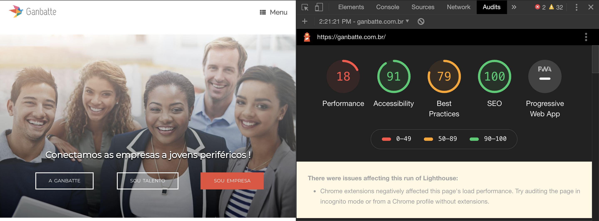

Design UX-UI/UX Writing para uma startup em crescimento
Ganbatte, uma consultoria de RH focada na diversidade
Este é um projeto feito para a Ganbatte, uma startup em crescimento no Rio de Janeiro, Brasil.
“Como podemos ajudar a Ganbatte a escalar seus negócios e ser conhecida como a melhor consultoria de Aquisição de Talentos com foco na diversidade do Brasil”.
Objetivo
Ajude a Ganbatte a aumentar o impacto e ganhar escala de negócios.
O problema
A Ganbatte está em processo de amadurecimento de seu modelo de negócios, empresas clientes e jovens que participam de processos seletivos aprovam a abordagem, mas a nova Ganbatte encontra obstáculos para expandir e escalar o negócio.
A solução
Elaborar uma análise completa da plataforma atual e dos processos da Ganbatte e trazer uma solução alinhando o negócio às necessidades do mercado e dos usuários.
Minha função
Estrategista de User Experience, UX Writer, e gerente de projetos para o novo posicionamento da ganbatte. Desenvolvendo todas estas tarefas: Gestão de equipe, Planejamento, Criação de textos, Pesquisa de usuários, Wireframing, Testes de usabilidade e Protótipo de baixa e alta fidelidade..
Equipe
Equipe deste projeto: eu, Anna Braggion como estrategista de UX-UI Design, UX Writer e gerente de projetos; Adriano como marketing de conteúdo; Leandro Jardim como consultor de aquisição de talentos; Karen Franquini como CEO.
Protótipo
Aqui está o protótipo do sprint 1
Clique aqui para acessar o protótipo online e interagir com ele.Você também pode conferir o vídeo do protótipo funcionando:
Introdução
Ganbatte é uma palavra japonesa que significa “não desista, continue trabalhando”, é como “boa coragem” em francês, tem um significado forte.
Ganbatte é o nome de uma consultoria de aquisição de talentos no Brasil que tem como foco a diversidade ajudando jovens de baixa renda de alguns grupos minoritários (LGBTQI+ negros, mulheres, pessoas com deficiência) a encontrar o emprego que sonharam.
Ganbatte - A história da empresa
A Ganbatte é uma empresa de impacto social criada por Karen, uma jovem brasileira carioca que enfrentou sozinha os problemas sociais. Em 2022 tive o prazer de conhecer Karen e começar a ajudar a empresa Ganbatte. Naquele momento, a Ganbatte era uma empresa de educação online que tentava ajudar jovens de alguns grupos minoritários a adquirir algumas habilidades para encontrar um emprego.
Depois de um tempo percebemos que o maior obstáculo para os jovens conseguirem emprego não era a falta de escolaridade, mas a forma como as empresas fazem os processos seletivos. Depois a Ganbatte mudou o foco e passou a ser uma consultoria de recrutamento e seleção.
O processo de experiência do usuário
1 - Checar o site atual
Como eu não estava envolvida no projeto do site da Ganbatte antes, precisei primeiro entender o que estava acontecendo com o site. Então, a primeira coisa que fiz foi verificar as auditorias do Google e as ferramentas de análise do Google.
Google Lighthouse
Primeiro executei o plugin Lighthouse no Google Chrome para verificar os índices de desempenho do site Ganbatte e entender o que funciona bem e onde o site precisa de melhorias. Neste relatório pudemos perceber que o tempo de resposta precisa de uma melhoria mas o SEO está aplicado da melhor maneira possível, o que é um bom sinal, mas além do SEO estar bem aplicado também gosto de dar uma olhada no Google Analytics para entender mais sobre as palavras-chave e ver se precisamos de algumas melhorias na área do mercado digital.
Google Analytics
O Google Analytics fornece informações valiosas que são usadas para melhorar o desempenho do site e aumentar a conversão. Para este projeto, verifiquei o Google Analytics para entender a estratégia de SEO do site que a empresa estava usando e obter mais informações sobre o tráfego do site e o comportamento do usuário.
Assim eu poderia saber a idade, sexo, interesse, dispositivo e localização do público do site e obter algumas respostas como: quanto tempo os usuários permanecem no site? Qual dispositivo eles usam? De onde eles vêm? por que os visitantes estão saindo do nosso site? Quais plataformas sociais eles preferem? Que tipo de conteúdo devemos escrever? Estamos alcançando metas?
Com todos esses dados pude decidir o KPI para medir os resultados do projeto de novo site e também ajudar a equipe de marketing em suas estratégias.
2 – Pesquisa de usuários
Durante a pesquisa de usuários conversamos com 2 usuários diferentes: Recrutadores e jovens (de grupos de diversidade) que estão à procura de emprego. Assim, poderíamos obter os insights para a plataforma.
3 – Referência
Para o benchmark, foi feita uma análise de plataformas de recrutamento de diferentes países para compreender os pontos fortes, fracos e oportunidades nas interfaces dos seus projetos.
4 - Listagem de recursos e ideias
Após todas as análises foram listadas as ideias dos processos anteriores, além disso também fiz um brainstorming com a equipe para tirar mais ideias para o projeto.
Depois disso obtivemos uma lista de funcionalidades do novo sistema e tarefas para atingir o objetivo.
5 – Priorizando – Criando um Cronograma
O gerenciamento do tempo é importante para qualquer projeto. Então, eu estava usando o Scrum com minha equipe para organizar as tarefas de cada semana, o chamado sprint.
Para priorizar tarefas criei uma tabela com a lista de funcionalidades criadas anteriormente.
Com esta lista criei um sistema de pontuação e convidei toda a equipe a votar. Assim no final conseguimos retirar quais tarefas eram mais urgentes e POSSÍVEIS de fazer com o tempo e a equipe que tínhamos atualmente.
Depois disso criei o cronograma com as tarefas de cada sprint.
Para a primeira sprint tivemos:
- Landing page - redesenho da página de destino
- Crie a plataforma H&R
- Formulário para postar nova oportunidade de emprego
- "Profile page" da empresa
6 – Protótipo
IU do Sprint 1
Aqui está o vídeo do nosso protótipo feito durante a Sprint 1
Confira nosso site para ver todo o projeto www.ganbatte.com.br.